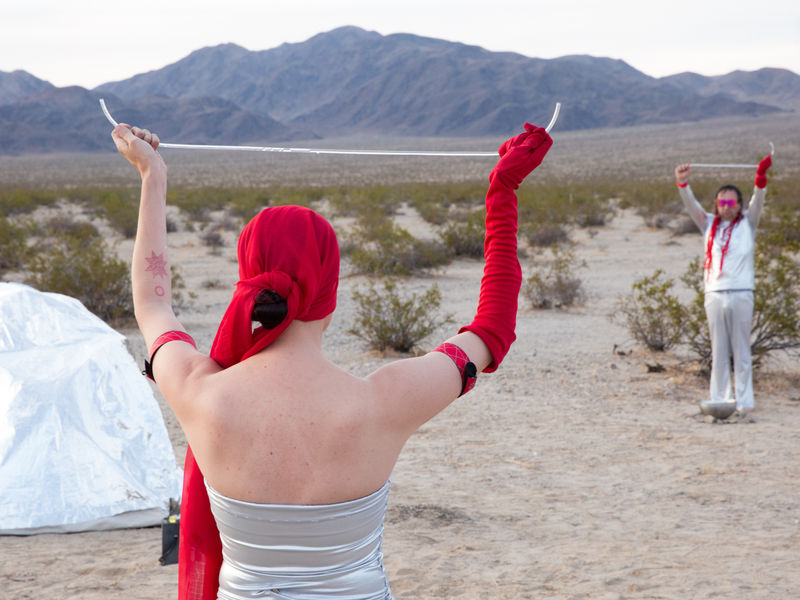
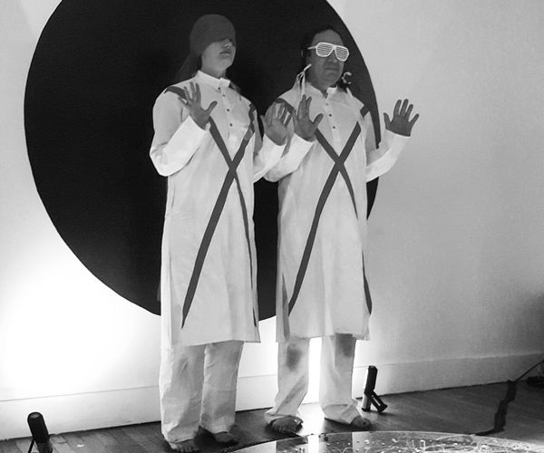

Bloodroot: Astral Shellmounds
November 9-30, 2018
Guillermo Galindo and Amber Stucke
a series of actions, site specific installation and an hour long performance that includes sound, language, and ritual to honor native lands
opening performance Friday November 9, 8PM
Bloodroot offers an incantation to honor the native lands in the San Francisco Bay Area. Bringing to attention the site of the West Berkeley Shellmound, the location is at least one out of 425 shellmound-funerary sites of the Ohlone people in the surrounding area. Known to be older than the pyramids in Egypt, the shellmound is a resting place for their dead among other things and are still to this day believed to be buried deep within the earth. If developers succeed, a five-story building with shops, apartments, and an underground parking garage will be built on the sacred Indian village site. Currently, a coalition of Native organizations, individuals, and families are protesting the development.
From a series of actions and a site specific installation that includes sound, language, and ritual, the piece establishes an imaginary navigation for the nearby site and calls to the land for the preservation of the sacred space. In an hour long performance, the piece will move throughout the gallery space to open a liminal portal of parallel connection.
Bloodroot is a lunar collective created between gal*in_dog aka Guillermo Galindo and Amber Stucke. Coming from the future, the collective creates site specific installations that are activated by performances to open liminal portals with sound, language and ritual to honor and call to the land, animals, plants, and stars.
We would like for the audience to keep in mind that this piece is an intimate experience and the quantity of people allowed into the gallery will be limited.
The gallery, with installation, sound piece, and detritus of performance, will remain as an activated entryway --- we invite you to visit throughout the month.
 